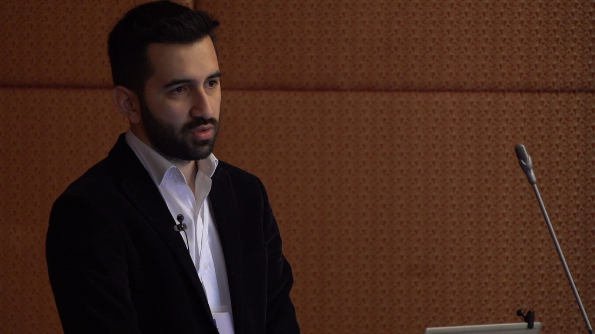

Hakkında About

Dr. Gültekin Ünal
Biyografi
2016 yılında Ankara Üniversitesi Veteriner Fakültesi'nden mezun oldum. Veterinerlik eğitimi sürecinde tıbbi tanı laboratuvarlarında ve üniversitemin patoloji laboratuvarında yarı zamanlı olarak çalıştım. Bu süreçte laboratuvar süreçleri hakkında kapsamlı bilgi ve deneyim edindim. Lisans hayatımın sonlanmasına kadar edindiğim bilgi ve deneyimi artırmaya yönelik çalışmalar yürüttüm; ayrıca üniversiteden mezun olmadan önce boş zamanlarımda Mikrobiyoloji laboratuvarında çalışarak moleküler mikrobiyoloji hakkında temel bilgi edindim.
Mezuniyetin ardından Ankara Üniversitesi Veteriner Fakültesi Mikrobiyoloji Anabilim Dalı'nda yüksek lisans eğitimime başladım. Bu süreçte bir TÜBİTAK 1003 projesi, danışmanımla birlikte yazdığım bir BAP projesi ve çeşitli bilimsel projelerde yer aldım.
Yüksek lisanstan mezun olmadan önce Bioeksen Ar&Ge Teknolojileri şirketinde uygulama uzmanı olarak göreve başladım. 4,5 yıl süren bu görev boyunca yurt içi ve yurt dışında çok sayıda uygulama ve araştırma projesinde yer aldım. Genel olarak enfeksiyöz etkenlerin tespitine yönelik bu çalışmalar, yerel imkânlar çerçevesinde moleküler biyoteknolojik yöntemlerin kullanılmasını amaçlıyordu.
Bu çalışmalar; Türkiye'deki yetkili COVID laboratuvarları (200+), T.C. Sağlık Bakanlığı Halk Sağlığı Genel Müdürlüğü, Ankara Üniversitesi Veteriner Fakültesi, Etlik Veteriner Kontrol Enstitüsü, Avitek Ar-Ge Teknolojileri, çeşitli özel tıbbi laboratuvarlar ve Türk Silahlı Kuvvetleri gıda taburları bünyesindeki laboratuvarlarda yürütüldü. Pandemi döneminin başında ilk PCR kit geliştirme projesine liderlik ettim; ardından ilk yerli kitin geliştirilmesi ve FDA/WHO onayları için koordinasyon çalışmalarına katıldım. Oxford Nanopore sistemlerinin rutin yeni nesil dizileme çalışmalarına dahil edilmesi için geliştirilen dizileme kitinin geliştirilmesinde de yer aldım.
2019 yılında mikrobiyoloji yüksek lisansımı tamamlayarak "Mikrobiyoloji Uzmanı" unvanını kazandım. Ardından yeniden mikrobiyoloji alanında doktora çalışmalarıma başladım. Bu süreçte; Moleküler Epidemiyoloji, enfeksiyöz etkenlerin tanısı (bakteri, virüs ve mantar), biyoinformatik ve tanısal yöntem geliştirme alanlarında kapsamlı çalışmalar yürüttüm.
Araştırma İlgi Alanları
Biography
I graduated from the Ankara University Faculty of Veterinary Medicine in June 2016. While studying veterinary medicine, I also worked part-time in medical diagnostic laboratories and in the pathology laboratory of my university, gaining comprehensive knowledge and experience in laboratory processes. Before graduating, I spent time in the Microbiology laboratory, acquiring foundational knowledge in molecular microbiology.
After graduation, I started my master's degree at Ankara University, Faculty of Veterinary Medicine, Department of Microbiology. During this period I was involved in a TÜBİTAK 1003 project, a BAP project (written with my advisor), and various scientific projects.
Before completing my master's program, I joined Bioeksen R&D Technologies as an application specialist. Over 4.5 years, I participated in numerous application and research projects both domestically and internationally, developing molecular biotechnological methods for detecting infectious agents.
These projects were carried out in authorized COVID laboratories across Turkey (200+), the Republic of Turkey Ministry of Health General Directorate of Public Health, Ankara University Faculty of Veterinary Medicine, Etlik Veterinary Control Institute, Avitek R&D Technologies, various private medical laboratories, and Turkish Armed Forces food laboratories. I led the first PCR kit development project at the beginning of the pandemic, coordinated the development and FDA/WHO approval of the first domestic kit, and contributed to a sequencing kit integrating Oxford Nanopore systems into routine NGS workflows.
In 2019, I completed my master's in microbiology and earned the title of "Microbiology Specialist." I subsequently commenced doctoral studies in microbiology, conducting extensive research in Molecular Epidemiology, diagnostics for infectious agents (bacteria, viruses, fungi), bioinformatics, and the development of diagnostic methods.
Research Interests
YayınlarPublications
Tüm yayınlar için: Google Scholar · ORCID · ResearchGate
Full list: Google Scholar · ORCID · ResearchGate
Yazılım ProjeleriSoftware Projects
Tüm projeler: github.com/cinnetcrash
All projects: github.com/cinnetcrash
gelidonyAMR
Salmonella Infantis genomlarının assembly, AMR profilleme, MLST ve cgMLST tiplemesi için Nextflow pipeline. Nextflow pipeline for Salmonella Infantis genome assembly, AMR profiling, MLST and cgMLST typing.
Nextflow AMR SalmonellaLymra-Ont
Oxford Nanopore ile maymun çiçeği (mpox) dizileme verilerinin analizi için yazılım. Software for analyzing Oxford Nanopore monkeypox (mpox) sequencing data.
Python Nanopore Mpoxont-monkeypox
Oxford Nanopore verileriyle maymun çiçeği genom assembly ve polishing iş akışı (Snakemake). Monkeypox genome assembly and polishing workflow using Oxford Nanopore sequencing (Snakemake).
Snakemake Nanopore GenomicsPython for WWS
Atık su gözetimi (Wastewater Surveillance) için Python öğretimi amacıyla hazırlanmış Jupyter Notebook eğitim materyalleri. Jupyter Notebook educational materials for Python instruction in wastewater surveillance (WWS).
Python Jupyter EducationBiyoinformatik_TR
Türkçe biyoinformatik eğitim materyalleri ve kaynakları. Turkish-language bioinformatics training materials and resources.
Shell Education TRpython_scripts
Biyoinformatik analizler için geliştirilmiş kurum-içi Python yardımcı betikleri. Collection of in-house Python utility scripts for bioinformatic analyses.
Python UtilityDesteklenen Araştırma ProjeleriFunded Research Projects
| Proje No | Proje Adı | Program | Görev | Süre | Durum |
|---|---|---|---|---|---|
| 125Z992 | Faj ve CRISPR Entegre Mikroakışkan Platform ile Empedans Ölçümüne Dayalı Antibiyotik Direnç Tespiti | TÜBİTAK ARDEB 1001 | Yurt Dışı Danışman | May 2026 – Kas 2028 | Yürürlükte |
| 125O410 | Kedi Meme Tümörlerinde Tümör Mikroçevresinin Tümör Mikrobiyomuyla İlişkisi ve Potansiyel İmmunogenetik Biyobelirteçlerin Araştırılması | TÜBİTAK ARDEB 1001 | Danışman | Şub 2026 – Ağu 2028 | Yürürlükte |
| 113R036 | Kanatlı Hayvanlardan ve Gıdalardan Salmonella İzlenmesi ve Kontrol Programlarının Geliştirilmesi | TÜBİTAK ARDEB 1003 (Öncelikli Alanlar — 2. Aşama) | Burslu Araştırmacı (Yüksek Lisans) | May 2014 – May 2017 | Sonuçlandı |
| 4302 | Subklinik Mastitisli İneklerde Tanı ve Tedavi Sonrası Süreçte Sütte Mikrobiyom, Mirnome ve Çoklu Omik Profillerin Araştırılması YK: Doç.Dr. Murat Onur Yazlık |
Araştırma Üniversiteleri Destek Programı — Tıp / Sağlık | Araştırmacı | — | Yürürlükte |
| — | Gıda Değeri Olan Hayvanlarda ve Etlerde Acinetobacter baumannii'nin Halk Sağlığı Açısından Öneminin Araştırılması ve Kontrolüne Yönelik Real-Time PCR Kiti ile Bakteriyofaj Preparatı Geliştirilmesi | ADEP | Araştırmacı | 2023 | Sonuçlandı |
| — | Kedi ve Köpeklerde Sık Görülen Dermatofitlerin Teşhisine Yönelik qPCR ve LAMP Tabanlı Hızlı Tanı Kitlerinin Geliştirilmesi | BAP | Araştırmacı | 2020 | Sonuçlandı |
| — | COVID-19 Kapsamında Ulusal Kapasitelerin Güçlendirilmesi Projesi | IPA II (AB Katılım Öncesi Fonu) | Ulusal Danışman | — | Sonuçlandı |
| — | Tatlı ve Tuzlu Sularda Yetiştiriciliği Yapılan Balıklarda Görülen Vibrio Türlerinin Halk Sağlığı Açısından Önemlerinin Ortaya Konması ve Teşhislerine Yönelik Çoklu qPCR Yöntemi Geliştirilmesi YK: Doç.Dr. H. Kaan Müştak — Veteriner Fakültesi, Mikrobiyoloji ABD · 36 ay |
BAP | Araştırmacı (Uzm. Vet. Hek.) | — | Sonuçlandı |
| 3840 | Gıda Güvenliği Açısından Risk Oluşturan ESKAPE-E Grubu Bakterilerin Yaban Hayvanlarında Varlığının Belirlenmesi, Antimikrobiyal Direncin Genomik Sürveyansı ve Direnç İzlemesinde Kolaylaştırıcı Biyoinformatik Yöntemlerin Geliştirilmesi YK: Dr.Öğr.Üyesi İnci Başak Müştak |
Araştırma Üniversiteleri Destek Programı — Tıp / Sağlık | Araştırmacı | — | Yürürlükte |
| 4073 | Zorlamalı Tüy Dökümünde Yemlere Çeşitli Katkı Maddeleri İlavesinin Yumurta Tavuklarında İkinci Dönem Yumurta Verim ve Kalitesi, Antioksidan Özellikler, Bağışıklık Gücü, Bağırsak Sağlığı, Gen Ekspresyonu ile Kemik Sağlığı Üzerine Etkisi YK: Prof.Dr. Esin Ebru Onbaşılar |
Güdümlü Proje — Tıp / Sağlık | Araştırmacı | — | Yürürlükte |
| 4654 | Farklı Hayvansal Gıda Üretim Modellerinden İzole Edilen Escherichia coli'lerde Halk Sağlığı Açısından Önemli Hibrit Patotiplerin ve Virülens Potansiyellerin Belirlenmesi ve Kontrole Yönelik Real-Time PCR Kiti Geliştirilmesi YK: Arş.Gör. Görkem Cengiz |
Araştırma Üniversiteleri Destek Programı — Tıp / Sağlık | Araştırmacı | — | Başvuruda |
| Project No | Project Title | Programme | Role | Duration | Status |
|---|---|---|---|---|---|
| 125Z992 | Detection of Antibiotic Resistance via Impedance Measurement Using a Phage and CRISPR-Integrated Microfluidic Platform | TUBITAK ARDEB 1001 | International Consultant | May 2026 – Nov 2028 | Active |
| 125O410 | Investigation of the Relationship Between Tumour Microenvironment and Tumour Microbiome and Potential Immunogenetic Biomarkers in Feline Mammary Tumours | TUBITAK ARDEB 1001 | Consultant | Feb 2026 – Aug 2028 | Active |
| 113R036 | Surveillance of Salmonella from Poultry Animals and Foods and Development of Control Programs | TUBITAK ARDEB 1003 (Priority Areas — Phase 2) | Research Fellow (MSc) | May 2014 – May 2017 | Completed |
| 4302 | Investigation of Milk Microbiome, Mirnome, and Multi-Omics Profiles During Diagnosis and Post-Treatment in Cows with Subclinical Mastitis PI: Assoc. Prof. Murat Onur Yazlık |
Research Universities Support Programme — Medicine / Health | Researcher | — | Active |
| — | Investigation of the Public Health Significance of Acinetobacter baumannii in Food-Producing Animals and Meat, and Development of a Real-Time PCR Kit and Bacteriophage Preparation for Control | ADEP | Researcher | 2023 | Completed |
| — | Development of qPCR and LAMP-Based Rapid Diagnostic Kits for Common Dermatophytes in Cats and Dogs | BAP | Researcher | 2020 | Completed |
| — | Strengthening National Capacities in the Scope of COVID-19 | IPA II (EU Pre-Accession Funding) | National Consultant | — | Completed |
| — | Determination of the Public Health Significance of Vibrio Species in Fresh and Saltwater Aquaculture Fish and Development of a Multiplex qPCR Method for Detection PI: Assoc. Prof. H. Kaan Müştak — Faculty of Veterinary Medicine, Dept. of Microbiology · 36 months |
BAP | Researcher | — | Completed |
| 3840 | Determination of the Presence of ESKAPE-E Group Bacteria Posing Risk to Food Safety in Wild Animals, Genomic Surveillance of Antimicrobial Resistance, and Development of Facilitating Bioinformatics Methods for Resistance Monitoring PI: Asst. Prof. İnci Başak Müştak |
Research Universities Support Programme — Medicine / Health | Researcher | — | Active |
| 4073 | Effect of Various Feed Additive Supplementation During Forced Moulting on Second-Period Egg Yield and Quality, Antioxidant Properties, Immune Strength, Intestinal Health, Gene Expression, and Bone Health in Laying Hens PI: Prof. Dr. Esin Ebru Onbaşılar |
Directed Project — Medicine / Health | Researcher | — | Active |
| 4654 | Determination of Hybrid Pathotypes and Virulence Potentials of Public Health Significance in Escherichia coli Isolated from Different Animal Food Production Models, and Development of a Real-Time PCR Kit for Control PI: Res. Asst. Görkem Cengiz |
Research Universities Support Programme — Medicine / Health | Researcher | — | Under Review |
İş DeneyimiWork Experience
-
Mar 2026 – Devam · Belçika / Uzaktan
Üye (Member)
COST Association — European Cooperation in Science and Technology
Tam zamanlı · UzaktanMic2Food COST Action kapsamında Avrupa çapında gıda güvenliği ve genomik epidemiyoloji araştırmalarına katkı.
-
Nis 2026 · 1 ay · Kopenhag, Danimarka
Visiting Researcher
DTU — Technical University of Denmark, National Food Institute
ESCMID Observership ProgramıGıda kaynaklı patojenler (Salmonella, E. coli STEC) için genomik sürveyans; AMR karşılaştırmalı genomik; HPC ortamında bakteri/plazmid/faj genomik küme analizleri.
-
Tem 2025 – Devam · 10 ay · Ankara
Ulusal Uzman — Laboratuvarlar (National Professional Officer - Laboratories)
Dünya Sağlık Örgütü (WHO) Türkiye
Tam zamanlı · Yerinde -
Oca 2025 – Devam · 1 yıl 4 ay · Ankara
Bilimsel Araştırmacı
Ankara Üniversitesi
Yarı zamanlı -
Ağu 2023 – Devam · 2 yıl 9 ay · Uzaktan
Biyoinformatik Boru Hatları & Veri Görselleştirme Çalışma Grubu Eş-Başkanı
Public Health Alliance for Genomic Epidemiology (PHA4GE)
Yarı zamanlı · UzaktanPHA4GE, küresel ölçekte esnek ve sürdürülebilir biyoinformatik kapasitesi oluşturmak için çalışan bir koalisyondur. NGS tabanlı patogen surveillansı için boru hatları ve veri görselleştirme standartları geliştirilmesi.
-
Ara 2021 – Ara 2024 · 3 yıl 1 ay · Ankara
Biyoinformatik Uzmanı
Dünya Sağlık Örgütü (WHO) Türkiye
Tam zamanlı · YerindeYeni nesil dizileme (NGS) ve biyoinformatik; veri bağlantı sistemleri güçlendirme; aylık seminer serisi koordinasyonu; biyoinformatik eğitimleri; Olay Yönetim Ekibi Lab & Sürveyans Pilonu (EQ Müdahalesi).
-
Ağu 2017 – Ara 2021 · 4 yıl 5 ay · Ankara
Bölge Müdürü
Bioeksen Ar-Ge Teknolojileri Ltd.
Tam zamanlı · Yerinde -
Ara 2016 – May 2017 · 6 ay · Ankara
Araştırmacı
TÜBİTAK
Tam zamanlı · YerindeKanatlı hayvanlar ve gıdalardan Salmonella serotiplendirmesi; ulusal kontrol ve eradikasyon programı geliştirme projesi.
-
Mar 2014 – Ağu 2014 · 6 ay · Bursa
Laboratuvar Asistanı
Synevo Türkiye -
Ağu 2014 – Eyl 2014 · 2 ay · Hannover, Almanya
Stajyer (IAESTE)
Stiftung Tierärztliche Hochschule Hannover
IAESTE Staj Programı -
Eyl 2013 – Ağu 2015 · 2 yıl · İznik, Bursa
Yarı Zamanlı Stajyer — Patoloji Anabilim Dalı
Ankara Üniversitesi
-
Mar 2026 – Present · Belgium / Remote
Member
COST Association — European Cooperation in Science and Technology
Full-time · RemoteContributing to pan-European food safety and genomic epidemiology research within the Mic2Food COST Action.
-
Apr 2026 · 1 mo · Copenhagen, Denmark
Visiting Researcher
DTU — Technical University of Denmark, National Food Institute
ESCMID Observership ProgrammeGenomic surveillance for food-borne pathogens (Salmonella, E. coli STEC); AMR comparative genomics; HPC-based bacterial/plasmid/phage genomic cluster analyses for reproducible bioinformatics.
-
Jul 2025 – Present · 10 mos · Ankara
National Professional Officer — Laboratories
World Health Organization (WHO) Turkey
Full-time · On-site -
Jan 2025 – Present · 1 yr 4 mos · Ankara
Scientific Researcher
Ankara University
Part-time -
Aug 2023 – Present · 2 yrs 9 mos · Remote
Bioinformatics Pipelines & Data Visualization Working Group Co-Chair
Public Health Alliance for Genomic Epidemiology (PHA4GE)
Part-time · RemotePHA4GE is a global coalition working to establish flexible, sustainable bioinformatics capacity worldwide. Leading the development of pipeline and data visualisation standards for NGS-based pathogen surveillance.
-
Dec 2021 – Dec 2024 · 3 yrs 1 mo · Ankara
Bioinformatics Specialist
World Health Organization (WHO) Turkey
Full-time · On-siteNext-generation sequencing (NGS) and bioinformatics; data linkage system strengthening; coordination of monthly seminar series; bioinformatics adult training; Incident Management Team — Lab & Surveillance Pillar (EQ Response).
-
Aug 2017 – Dec 2021 · 4 yrs 5 mos · Ankara
Regional Director
Bioeksen R&D Technologies Ltd.
Full-time · On-site -
Dec 2016 – May 2017 · 6 mos · Ankara
Researcher
TUBITAK
Full-time · On-siteSalmonella serotyping from poultry and food samples; development of national control and eradication programs.
-
Mar 2014 – Aug 2014 · 6 mos · Bursa
Laboratory Assistant
Synevo Türkiye -
Aug 2014 – Sep 2014 · 2 mos · Hannover, Germany
Intern (IAESTE)
Stiftung Tierärztliche Hochschule Hannover
IAESTE Internship Programme -
Sep 2013 – Aug 2015 · 2 yrs · İznik, Bursa
Part-time Intern — Department of Pathology
Ankara University
EğitimEducation
| Yıl | Derece | Kurum |
|---|---|---|
| 2019 – devam | Doktora — Mikrobiyoloji | Ankara Üniversitesi, Veteriner Fakültesi |
| 2016 – 2019 | Yüksek Lisans — Mikrobiyoloji | Ankara Üniversitesi, Veteriner Fakültesi |
| 2010 – 2016 | Lisans — Veteriner Hekimliği (DVM) | Ankara Üniversitesi, Veteriner Fakültesi |
| Year | Degree | Institution |
|---|---|---|
| 2019 – present | PhD — Microbiology | Ankara University, Faculty of Veterinary Medicine |
| 2016 – 2019 | MSc — Microbiology | Ankara University, Faculty of Veterinary Medicine |
| 2010 – 2016 | BSc — Veterinary Medicine (DVM) | Ankara University, Faculty of Veterinary Medicine |